COMPANY
会社概要
自らの“存在意義”を持てる世界を創りだす
この究極の目標にチャレンジして参ります
CEO’S MESSAGE
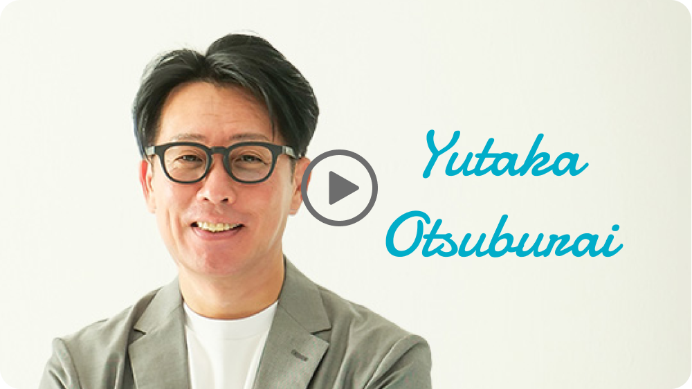
会社情報
- 社名
- 株式会社ラウレアソリューション
- 英名社名
- LAULEA SOLUTION INC.
- 代表取締役
- 大粒来 豊
- 取締役
- 只野 達朗
- 設立
- 2012年8月
- 顧問
- 社会保険労務士 伊藤 大祐
- 住所
- 〒101-0052
東京都千代田区神田小川町3-8-10
メアリヒト御茶ノ水ビル4F - 資本金
- 1,000万円
- 事業内容
- システムエンジニアリングサービス
システム／アプリ開発
自社サービスの開発・販売
沿革
- 2012年8月
- 会社設立（渋谷区）
- 2014年4月
- フリーランスエンジニア向けマッチングサイト 運用開始
- 2020年7月
- コーポレートサイト リニューアル
- 2020年11月
- 子会社 株式会社Laulea ISM 設立
- 2021年1月
- フリーランスエンジニア向け新マッチングサイトをリリース
- 2021年7月
- ラウレアソリューション本社、御茶ノ水へ移転
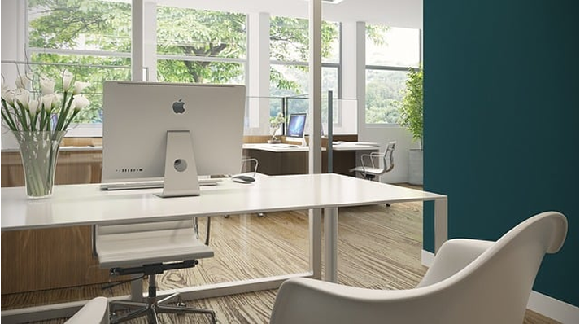
SYMPOSIUM
座談会
東京・神奈川・千葉で活躍している
6名の社員に集まってもらい、
活動やキャリアの築き方を聞いてみました。
具体的な仕事内容から、
仕事を通じて得た経験から感じること。
自身の目標やキャリアプランにまでスポットを当てています。
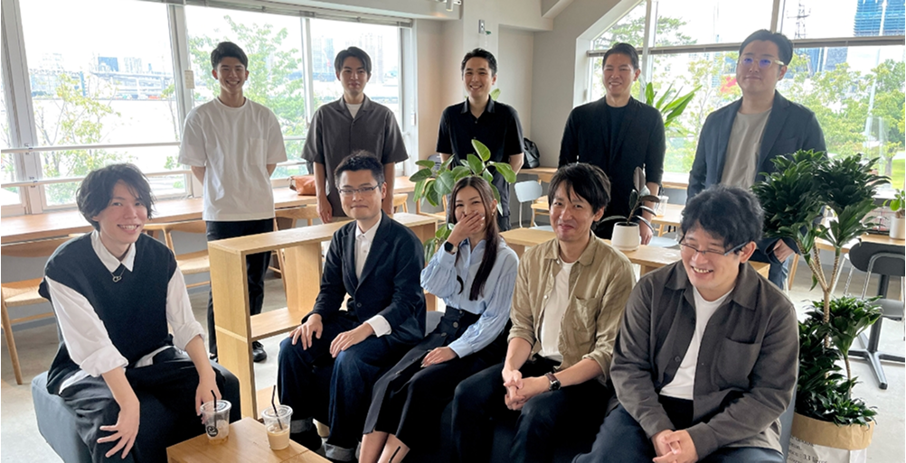
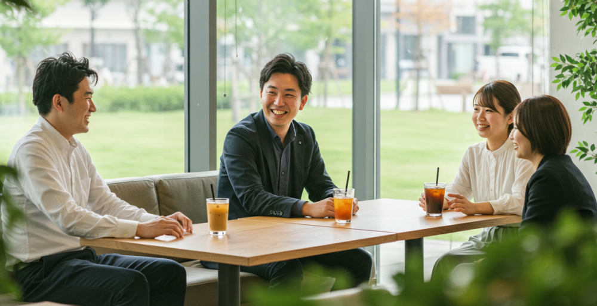
MEMBER
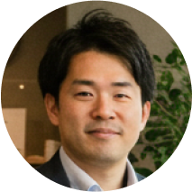
SE 9年目
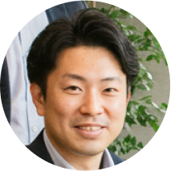
営業 1年目
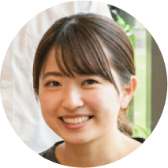
PG 2年目
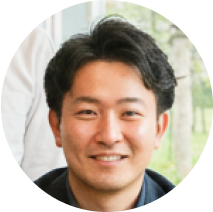
SE 3年目
SE 5年目
インフラ 8年目
- Q.ラウレアソリューションに入社した経緯をお聞かせください
-
PG2年目
私は、千葉県にある公共職業訓練校でシステム開発を学んでいました。入社前は事務系のアルバイト経験しかありませんでしたが、複数社から指名求人があったんです。
そこで指名求人があった会社のHPをチェックしたら、ラウレアの作りが一番しっかりしていたのと、"全ての人たちにHAPPYを提供する"と載っていたので、どんな会社なんだろうと興味が湧きました。
面接で、ラウレアでは未経験でも開発ができると聞いて、チャレンジしたいと思い入社を決めました。SE3年目
僕も同じ千葉県の職業訓練校出身です。ラウレアの前は美容師だったのですが、立ち仕事で腰を痛めてしまい、次は座ってできる仕事がいいと思っていました（笑）。プライベートではゲームをやったり、スマートフォンもよく使うので、大勢の人が使うようなソフトを開発したいと思ったのがIT業界を目指したきっかけです。
実は、すごくたくさんの会社から指名求人をいただきましたが、面接に行ったのはラウレアが初めてでした。そこでスムーズに選考が進んで、会社の雰囲気や社長の人柄が安心できたので入社を決めました。営業
1年目僕は、同じ系列の神奈川県にある職業訓練校出身です。前職は新卒で入ったドラッグストアでしたがワークライフバランスに問題があって（苦笑）、もっとプライベートを大事にできる仕事を探していました。IT業界を選んだのは、前職に居たときに起きたルーターの障害をIT系の友人が解決してくれて、「格好いいな！」と思ったのがきっかけです。ラウレアは、HPに載っていた社員のインタビュー記事から楽しそうで優しい雰囲気が伝わってきたので、自分の目で見てみたいと思ってエントリーしました。僕も選考はスムーズでしたし、実際ラウレアに行ってみてHPの印象が間違いなかったことがわかり入社しました。
- Q.現在、担当されているお仕事内容を教えてください
-
SE5年目
現在は、クラウド上で動作するBIツールのカスタマイズ開発を行っています。これまで経験してきたJavaによるサーバサイド開発とは異なり、仕様に様々な制約がある中で、どれだけお客様の要望に応えられるかというのが難しくもあり、腕の見せどころでもあると思います。
担当フェーズは基本設計ですが、これもそれまで経験してきたJava開発よりも自由度が落ちる分、それなりの工夫が必要で、それが新鮮でもありますね。SE3年目
今の案件は、Pythonを使った開発です。私も職業訓練校でJavaを学んできたのですが、Pythonは初めて触る言語だったこともあり、スタート当初は戸惑うことばかりでした。ですが、先輩から一つひとつ丁寧に教えていただき、現在は小さな案件ですが実装を任されています。どんなに詳しく調べてもわからなかったことを、いつもサラッとわかりやすく解説してもらい、『次はこう調べるといいよ』と的確なアドバイスまでいただいています。また、お客様とお話しする際も常に冷静沈着な対応で、『自分もあんなSEになりたい！』と目標にしています。
- Q.仕事を通じてのやりがいは、どういったところに感じますか？
-
SE9年目
私は、新しいモノを試すことが好きで、それは自分が出来ることが増える＝スキルアップだからなのだと思います。今の現場では、要件定義と基本設計を行っていますが、これも常に新しいことへの取り組みなので楽しく業務にあたれています。また、私はモノづくりも好きで、“自分が考えたモノが形として残る”という今の仕事にとてもやりがいを感じています。サブリーダーになってから、メンバーの教育・研修を担当することが増えました。これはまだ試行錯誤の状態ですが、自分以外のメンバーのスキルアップ支援というのも新たなやりがいとなっています。
インフラ8年目
私は、これまで複数の開発プロジェクトの経験があります。開発プロジェクトでは、チームで協力してひとつのものを作るということと、自分が作ったものが動くといった様々な達成感を得られます。また、多様な現場に行くことで、新しい技術を身につけることができ、業務を通じて自分自身の能力の向上を実感することができます。この2つがこの仕事の大きなやりがいだと感じています。
INTERVIEW
インタビュー
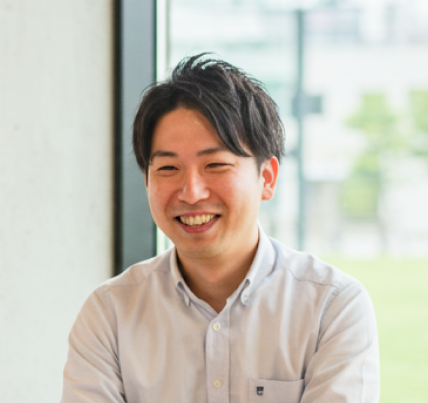
「人と話すのが好き」
から始まった
今の仕事
SES営業
2020年入社
- Q.現在のお仕事について教えてください。
- 現在はSES営業として、クライアント企業とエンジニアの橋渡し役をしています。具体的には、企業の開発ニーズをヒアリングして、最適なエンジニアをご提案する仕事です。クライアントとの信頼関係づくりも大切ですが、エンジニア一人ひとりのキャリアや希望も丁寧に汲み取る必要があるので、まさに“人と人をつなぐ”仕事ですね。
- Q.この仕事を選んだきっかけは？
- もともと人と話すのが好きで、営業職に興味がありました。ただ、単にモノを売るのではなく、“人”を扱うビジネスに魅力を感じたんです。IT業界って難しそうなイメージもあったんですけど、逆にだからこそ、自分が間に立って分かりやすく伝えられたら価値があると思ったのがきっかけです。
- Q.SES営業として大切にしていることは？
- とにかく「誠実でいること」です。SESは人材のマッチングが中心ですが、数字だけを追ってしまうと、ミスマッチが起きてしまう。エンジニアにもクライアントにも、正直に、ちゃんと向き合うことを大切にしています。
- Q.ライフワークバランスについてはどうですか？
- ここ数年でかなり意識するようになりましたね。若い頃は「とにかく成果を出したい！」って気持ちが強くて、夜遅くまで働いてた時期もありました。でも、結婚してからは自然とバランスを考えるようになりました。 今の働き方はすごく自分に合っているなと感じています。仕事はしっかり集中して取り組みつつ、オフの時間は自分の趣味や家族との時間にあてられるので、いいリズムで生活できています。
- Q.この仕事のやりがいは何ですか？
- エンジニアから「この現場に入れてよかったです！」とか「次のステップも一緒に考えてください」って言ってもらえたときが一番嬉しいですね。あと、クライアントからも「この人に頼めば間違いない」と言っていただけると、やっててよかったなと思います。
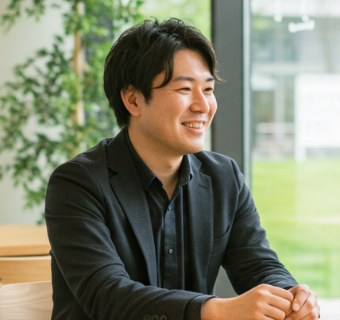
家族もキャリアも、
どちらも大切にしたい
SE
2021年入社
- Q.現在のお仕事について教えてください。
- 現在は常駐先のクライアントの元で、基幹システムの保守・運用を担当しています。加えて、新しい機能追加の設計や実装にも関わっていて、上流から下流まで幅広くやらせてもらってます。技術的な面白さもありますし、安定性が求められる分、責任感も持って取り組める環境です。
- Q.この仕事を選んだきっかけは？
- もともと機械いじりや仕組みを考えるのが好きだったのと、学生時代にプログラミングに出会って「これで食っていけたら面白そう」と思ったのが最初のきっかけですね。新卒からずっとIT業界で、今はもう10年以上になります。
- Q.SEとして大切にしていることは？
- 一番は「伝える力」ですね。技術力ももちろん大事ですが、結局はチームで動く仕事なので、ちゃんと伝える、ちゃんと聴くことがすごく大事。仕様を確認するときや、トラブル時の報告・相談なんかでも、誤解がないように気をつけています。あと、家庭があるので「無理をしすぎないこと」も大切にしてます。自分が倒れたらチームも家族も困るので（笑）。
- Q.ライフワークバランスについてはどうですか？
- そこはすごく意識していますね。うちの会社は比較的柔軟で、リモートワークも可能ですし、残業もそこまで多くないので助かっています。今は子どもが小さいので、夜は一緒にご飯を食べたり、お風呂に入れたりする時間が何より大事です。技術職って「時間をかければなんとかなる」みたいな部分もあるんですけど、限られた時間で成果を出すほうが、自分の成長にもつながると感じています。
- Q.この仕事のやりがいは何ですか？
- 自分が関わったシステムが問題なく動いていて、現場の人に「便利になったよ」と言ってもらえるとやっぱり嬉しいです。裏方の仕事ではありますが、確実に人の役に立っている実感がある。そこがSEの面白いところだと思います。
DATA
数字で見るラウレアソリューション
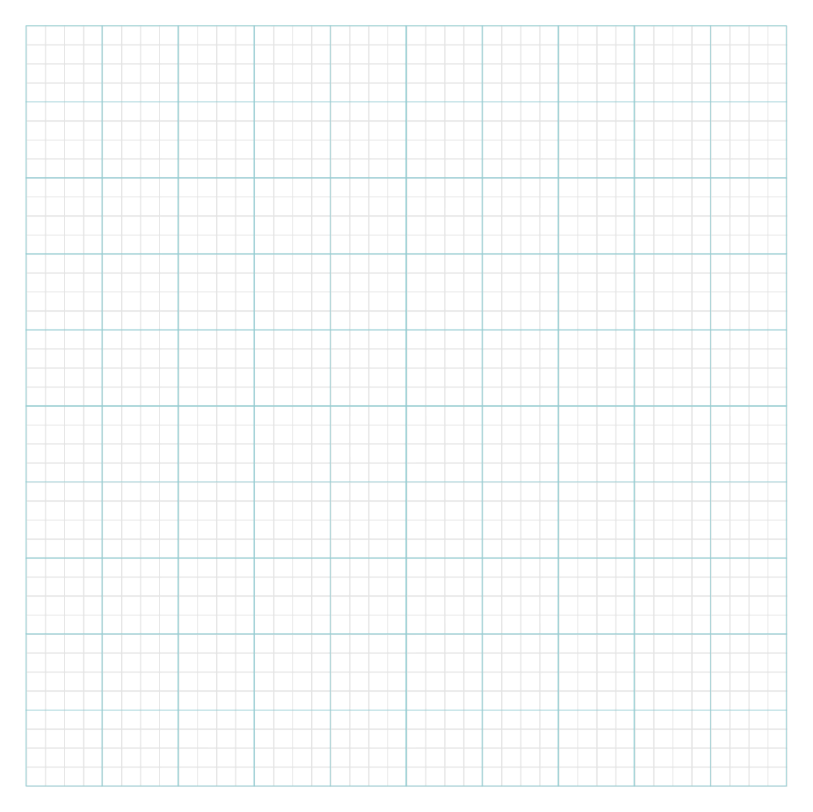
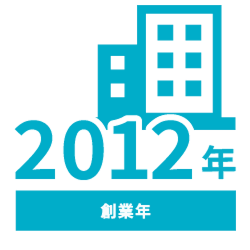
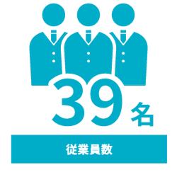
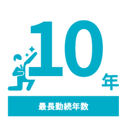
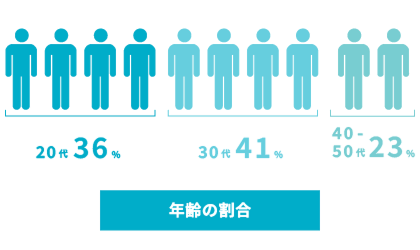
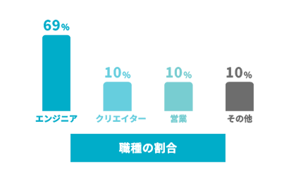
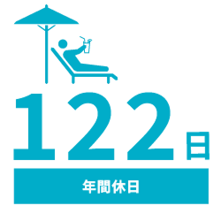
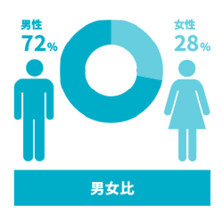
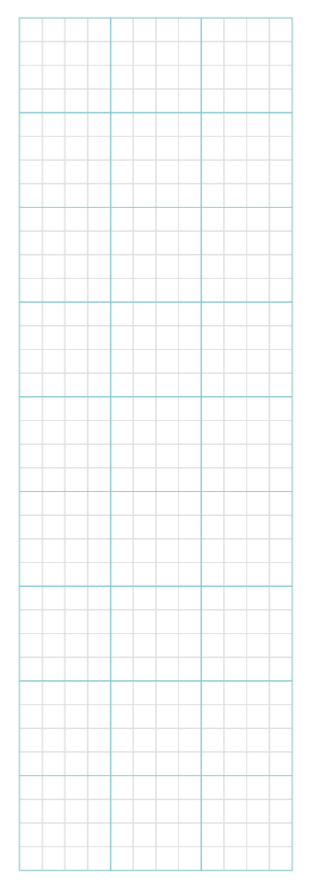
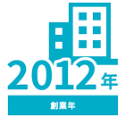
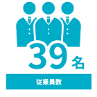
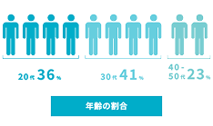
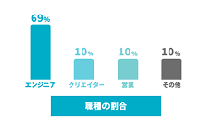
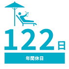
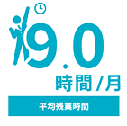
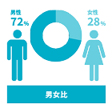
RECRUITMENT
募集要項
ラウレアソリューションは
『自らの“存在意義”を持てる世界を創りだす』
ことにチャレンジしています。
私たちと共に楽しく成長していきましょう。
コンサルタント（営業）(経験者)
- 職種/募集ポジション
- コンサルタント（営業）（経験者）
- 雇用形態
- 正社員
- 必須条件
-
- ・IT業界に限らず「営業職」で3年以上の営業経験のある方。
- ・現場の判断はお任せする事になりますのでお客様と当社のメリットを考えながら「臨機応変」にお付き合いの仕方を組み立てていける方。
- ・企業の新規開拓もお任せするので、前職でのネットワークを生かし粘り強く前向きに行動できる方。
- 給与
- 基本給200,000円〜400,000円／月 スキル、経験により決定 年収（400万～1,250万円） 調整手当（50,000円〜95,000円／月 固定残業代、40h/月分） 営業手当（20,000円〜100,000円／月 営業実績により支給） 通勤手当（〜50,000円／月 通勤手当実費を支給）※上限5万円／月 インセンティブ（利益実績に応じて、毎月計算毎月支給） 賞与（実績業績によって支給）
- 勤務地
- 本社
- 勤務時間
- 9:30 〜 18:00（休憩60分、実働7.5時間）※時間外勤務有り
- 休日
- 休日（土日祝日、年次有給休暇、年末年始休暇、夏期／7月〜9月に3日間）、誕生日、慶弔、特別休暇など
- 福利厚生
- 社会保険完備（健康、厚生年金、雇用、労災）、健康診断、年休取得奨励日、IT資格取得祝い金、IT資格取得費用補助、書籍購入費用負担、慶事祝い（結婚、出産、入学など）、弔事御見舞、誕生日プレゼント（Amazonギフト券）
- 選考フロー
-
- 1.書類選考
- 2.一次選考（人事面接）
- 3.二次選考（代表面接）
システムエンジニア(経験者)
- 職種/募集ポジション
- システムエンジニア(経験者)
- 雇用形態
- 正社員
- 必須条件
- 必須条件業務系WEBシステムの開発経験（業界不問）
■ 歓迎要件
HTML、CSS、何らかのフレームワーク（Spring、CakePHP、Ruby on Rails など）、LAMP環境での開発、Git - 給与
- 基本給325,000円〜450,000円/月 スキル、経験により決定 年収（450万〜650万円） 調整手当（50,000円〜95,000円／月 スキル、経験により決定） 資格手当（3,000円〜15,000円／月 保有資格により支給） 通勤手当（〜50,000円／月 通勤手当実費を支給）※上限5万円／月 賞与（業績によって支給） 昇給（年1回）
- 勤務地
- 本社もしくはプロジェクト先（都内、神奈川県、千葉県、埼玉県）
- 勤務時間
- 9:30 〜 18:00（休憩60分、実働7.5時間） ※時間外勤務（有り、プロジェクトによって異なるが平均8.4時間／月 前年実績
- 休日
- 休日（土日祝日、年次有給休暇、年末年始休暇、夏期/7月〜9月に3日間）、誕生日、慶弔、特別休暇など
- 福利厚生
- 社会保険完備（健康、厚生年金、雇用、労災）、健康診断、年休取得奨励日、IT資格取得祝い金、IT資格取得費用補助、書籍購入費用負担、慶事祝い（結婚、出産、入学など）、弔事御見舞、誕生日プレゼント（Amazonギフト券）
- 選考フロー
-
- 1.書類選考
- 2.一次選考（人事面接）
- 3.二次選考（代表面接）
採用決定お祝い金
キャンペーンを実施中
システムエンジニアのご経験が1年以上で、
次のサイト(https://lausol.com)から
直接ご応募いただいた方に、
採用決定のお祝いとして、下記の通り
お祝い金をプレゼントいたします。
当社選考を経て、PM以上と判断した方
システムエンジニア経験3年以上の方
システムエンジニア経験1年以上の方
100万円
60万円
30万円
当社選考を経て、PM以上と判断した方
100万円
システムエンジニア経験3年以上の方
60万円
システムエンジニア経験1年以上の方
30万円
対象職種
システムエンジニア(経験者)
支給条件
株式会社ラウレアソリューションのWebサイト経由で直接ご応募いただき、
正式採用が決定すること。(入社時期は相談可)
※以下の方は適用対象外となります。
- ①転職エージェント・知人からのご紹介または求人媒体経由でご応募いただいた方
- ②現在または過去に、株式会社ラウレアソリューションでの就業経験または雇用契約（契約形態問わず）のある方
ご入社後、以下の分割支給日に在籍し、その間に欠勤がないこと。
分割支給日と支払い金額
ご入社日を起算日として、
- ① 稼働1ヶ月経過後の翌月の給与支給日 ：お祝い金の1/4相当額
- ② 稼働3ヶ月経過後の翌月の給与支給日 ：お祝い金の1/4相当額
- ③ 稼働12ヶ月経過後の翌月の給与支給日：お祝い金の1/2相当額
- ※分割支給日に在籍が確認できない場合には、支給はございません。
- ※分割支給日に在籍していても、その時点で退職が決まっている場合は支給はございません。
- ※分割支給日に稼働（SES契約で案件に入場していること）が確認できない場合は、支給はございません。
- ※所得税控除の対象となります。
- ※社会保険料・翌年度住民税額などに影響する場合があります。
FAQ
お祝い金についてのよくあるご質問
採用活動では有料媒体やエージェント等に依頼させていただいておりますが、HPから応募していただいた場は、その費用を直接あなたへお渡しすることができます。もちろん、入社時に高いモチベーションを持っていただくことが狙いですが、使いみちは自由です。
システムエンジニアとしての経験があれば可能です。どのようなスキルをお持ちなのか詳しく聞かせてください。
そんなことはありません。当社の正社員を経験後フリーランスになった方や他社へ転職された方もいらっしゃいます。
一度受け取られた入社祝い金は、お返しいただく必要はありません。
稼働が開始された月の翌月給与支給日に、1度目の分割祝い金を受け取っていただけます。
稼働が決まらない間は、残念ながら入社祝い金の支給はありません。